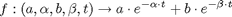
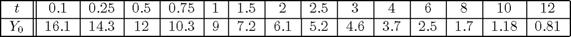
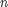
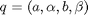
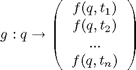

Modeling the intravenous injection of a drug into a subject
This application presents a more advanced way to use vsivia, in comparison with torus_parameters and doughnut_parameters.
The purpose of this application is to model, by a mathematical expression, the effect of a bolus intravenous injection of a drug into a subject. Concretely, we will aim at modeling the evolution of the blood concentration of the drug, using a function f of the kind:

where t is the time elapsed since the injection. Enclosures of the four other parameters, that are constant parameters, will be computed using vsivia, from real measurements that give the value of f for some known values of t. The measurements considered here are:

Let us set down  the number of measurements, and q the quadruplet of parameters we are looking for:

Let us introduce also g, defined as:

In this way, the problem of determining q can be seen as the inversion of Y0 through g. Hence, enclosures of q may be found using vsivia.
The following class shows how to configure vsivia in order to solve this problem.
To begin with, a new class inheriting from vsivia_parameters shall be created.
classdef drugs_parameters < vsivia_parameters
properties
Its algorithm property shall be inversion.
algorithm = 'inversion' ;
An initial guess about a box containing q shall be specified.
U0 = [1 100 ; 0 10 ; 1 100 ; 0 1] ;
Then the image to be inverted, namely the measurements.
Y0 = [.95 1.05] * interval([ 16.1 14.3 12 10.3 9 7.2 6.1 5.2 4.6 3.7 2.5 1.7 1.18 .81 ], [], 0) ;
Then the accuracy parameter, epsilon, that is set to 10 %, with respect to the size of U0.
epsilon = '10 %' ;
end % properties
In addition to the "core parameters" introduced by vsivia_parameters, the time vector is introduced as an additionnal property.
properties (Constant)
t = [ .1 .25 .5 .75 1 1.5 2 2.5 3 4 6 8 10 12 ] ;
end % constant properties
Finally, the function to be inverted (i.e. g) is defined. In comparison with doughnut_parameters and torus_parameters, the input parameter, namely q, is processed as a single parameter, and not as four separate parameters.
methods (Static)
function y = compute(q)
t2 = drugs_parameters.t ;
y = q(:,1) * exp(-q(:,2)*t2) + q(:,3) * exp(-q(:,4)*t2) ;
end
end % methods
end